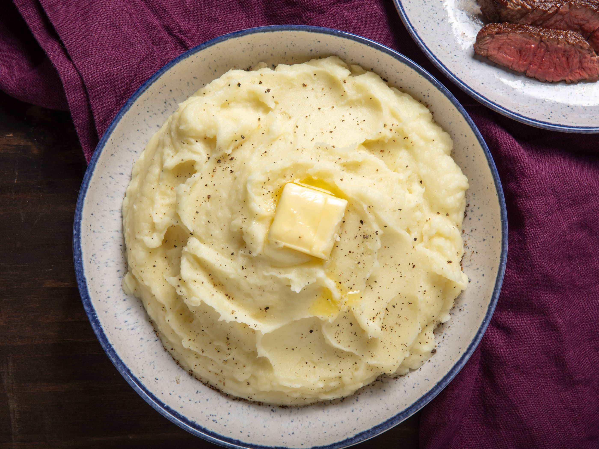

Mashed Potatoes

Description
Is there anything better than some well prepared mashed potatoes?
Ingredients
- 4lb russet potatoes
- 2 cups whole milk
- 12tbsp unsalted butter
- salt and pepper
Steps
- Peel and cube potatoes, rince in large pot until water runs clear
- Fill pot with water to cover potatoes, season generously with salt
- Bring to a boil over med-high heat, reduce and simmer for about 15 mins (or til tender)
- Drain, and rinse with hot water, allow to steam in collander to remove moisture
- Mash/mix/process potatoes to preffered consistency
- Add butter and fold into potatoes
- Mound potatoes in centre of pot over medium heat, add milk around centre
- Bring milk to simmer before folding into potatoes
- Remove from heat, season, and serve.